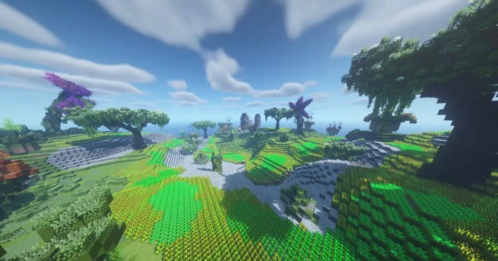
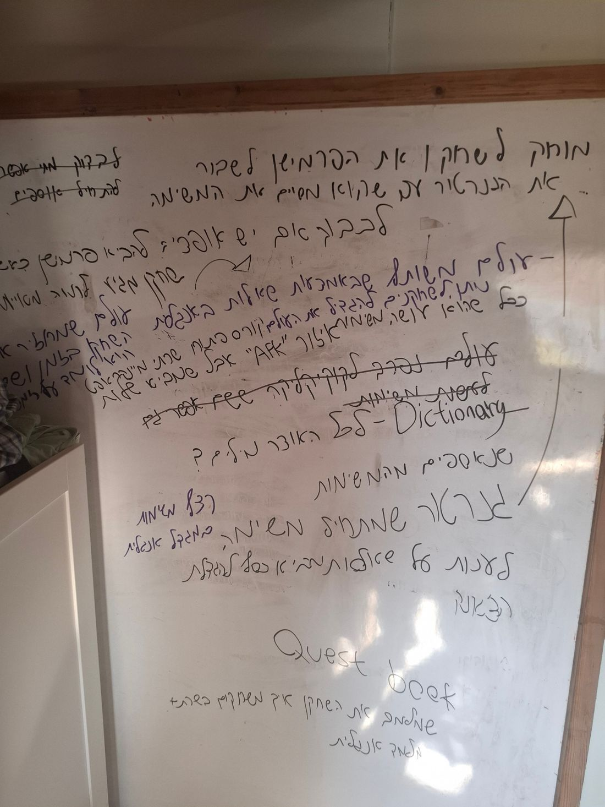

A decade of designing Minecraft servers — worlds, economies, and progression systems — several with real, live player bases. This is where I learned level design: shaping the spaces players move through, at a scale most of my other work never reached.
The 60-second version — the reasoning that ran through every server, from the core problem to what I'd change next. The servers themselves are below.
A single-player level can be linear. A server has to hold hundreds of players wandering at once — each needing to know where they are, where to go, and why to keep going, with no loading screen to hide the seams.
I built worlds as themed regions with deliberate connections and level-gated access, each region a distinct silhouette so players self-orient. The map teaches the progression before any text does.
These weren't paper designs. They ran with real communities — closed betas of ~50, one peaking near 300 concurrent — which is where a layout's flaws actually show up.
Servers that held live player bases, textures I authored 100% of, and one original concept a studio thought was worth buying. Design validated by players, not just by me.
Most of these closed for reasons outside design — lost programmer budget, teammates drafted into the army. I'd scope tighter to what a small volunteer team can actually ship, and prove the loop before building the whole world.
Worlds split into contained regions with limited exits and level-gated access, so the map reveals itself in order instead of dumping the player into everything at once.
Every city and region gets its own theme, palette, and silhouette — a green farming valley, a trade port, a fog-choked crime district — so players always know where they are without a minimap.
Enemy level and reward scale with how deep or far a zone sits. Risk maps to reward spatially, so moving through the world is the difficulty curve.
Paths, hubs, and NPC/quest placement pull players forward and set the rhythm of tension and rest — the level guiding the player, not a quest marker.
Six servers, ordered roughly by how far they got. Some ran live; others are designed-but-unlaunched concepts backed by full design docs. I've framed each honestly — for the concepts, the design thinking is the artifact, not a shipped build.

An RPG server I designed solo, built around branching progression — professions, collections, home setup — layered over a large explorable world.
The world is split into enclosed ~70×70 zones, each with up to four exits — deliberate connectivity and gating. Themed, level-ranged cities give it shape: a green-mountains starter valley (lv 1–30), a trade port where every ship in the world docks, a chalk-mountain warrior village, Arcanum the magic city you must earn entry to, a fog-and-crime district hiding an underground-rail villain, a graveyard city, and a forbidden Temple (lv 50–80). Midas' Tunnel descends three floors where danger and loot both climb.
A race-based RPG server — five playable races (Elves, Giants, Fairies, Dwarves, Angels), each a distinct combat identity: elves on the bow, giants slow but tanky, fairies as flying support, dwarves fast backstab assassins, angels the late-game unlock.
A huge themed overworld — forests, sci-fi mountain ranges, abandoned cities, a hidden underground city, and a giant graveyard built around a single enormous tree. Each race gets its own home city, with the human capital designed as the standout landmark. Weapons and armor read at a glance: the stronger the gear, the more ornate the texture.
An original educational RPG that teaches English through outer space — players explore as astronauts and aliens across a world I built in orbit, picking up the language by playing rather than studying.
I built the whole thing around a learning goal instead of just fun — the space setting turns vocabulary and practice into exploration, quests, and discovery, so moving through the world doubles as moving through the language. Designing a space players learn in, not just play in, is a different discipline, and the one I'm proudest of reaching for.

A server I designed from scratch alongside one other designer and a programmer. I owned roughly 90% of the gameplay loop and authored the textures.
It's the one that reached the biggest live audience — a peak of ~300 concurrent players. That's a real, at-scale playtest of a loop I designed: the kind of feedback signal most solo designers never get to work against.
A collection-chase server built on a case-opening loop — open cases (CS-style), swap the cards you pull, and complete a full set for a real cash prize. I authored 100% of the textures.
This one was my original idea, and it was acquired by a studio (YourGame). Having a concept validated commercially — bought, not just played — is a signal I'm proud of and rare to have this early.
A dungeon-exploration server with RPG progression layered in — designed to send players deeper through connected combat spaces.
It didn't make it to launch — a mix of budget and waning team interest. Included here because the earlier design work is real, and knowing which projects to let go is part of the job.
Several of these never reached a full public launch — and almost always for reasons outside the design. Programmer budget ran out; teammates were drafted into the army; a solo project ran out of my own free time. In volunteer Minecraft-server land, that's the normal shape of things.
I've kept them here, framed honestly as design concepts, because the layouts, economies, and progression thinking are real work — and the ones that did run (a ~50-player beta, a ~300-peak server, a concept a studio bought) are the proof that the thinking holds up in front of real players.
Open to level-design and game-design roles, internships, and collaborations.
© 2026 Dekel Riess · Game Designer Portfolio